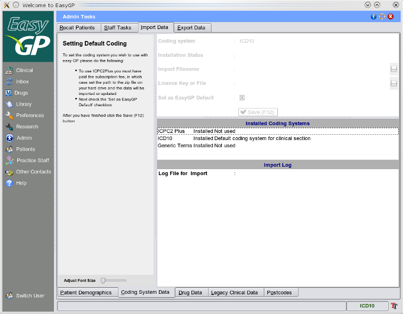

Coding - Importing

A generic terms list and ICD10 are supplied as defaults with EasyGP, however should users wish to pay a subscription fee for ICPC2Plus then this may be imported into the system see
Coding - ICPC
.